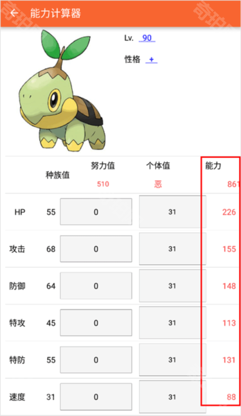

为什么 PokeDex 能把宝可梦配队这件事算得这么准？
从多形态搜索拆分到速度线反推，拆解 PokeDex 如何把宝可梦对战的隐性规则变成显性约束引擎，让配队从碰运气变精准计算。
作为玩了十几年宝可梦的老玩家，我有过无数次"配了两小时队，上线才发现某招根本用不了"或者"速度差 3 点没过烈咬陆鲨线被秒"的惨痛经历。PokeDex官网 出来后，这种事就没再发生过。我一直好奇它是怎么做到的——直到我拆开它的几个核心设计看了一遍，才意识到它解决的根本不是"数据不够"的问题，而是宝可梦配队这件事里散落在各处的隐性规则的问题。
问题：配队的核心矛盾从来不是"数据不够"
招式表、种族值、道具效果，这些东西百度一搜全有。问题是，这些数据之间有一套复杂的隐含逻辑：速度线阈值决定先手后手、版本间的招式道具可用性完全不同、多形态宝可梦的属性种族值招式池全跟着变、能力值公式是非线性的……散落在攻略里的碎片数据根本没法精确组合成"我这只宝可梦到底能不能打"的判断。
传统图鉴只解决了"查数据"的问题，没解决"用数据做决策"的问题。PokeDex 的核心突破，是把宝可梦对战的规则体系——速度线、版本差异、形态分支、能力值公式——做成了应用内部的约束引擎。你不用自己去想公式，它直接告诉你"这么配能不能过线"。
拆解：四个关键设计背后的技术取舍
多形态搜索的粒度问题
洛托姆有 6 种家电形态——洗衣机（水/电）、冰箱（冰/电）、割草机（草/电）、风扇（飞行/电）、微波炉（火/电）、普通（电），每种的属性、种族值、招式池完全不同。骑拉帝纳有另一种形态和起源形态，美洛耶塔有歌声形态和舞步形态，帕底亚三犬更是过去种和未来种属性全部反转。
传统做法是"搜洛托姆 → 加个形态下拉框"，但配队时这根本帮不上忙。你想搜"水/电属性的特攻手"，搜"洛托姆"出来的 6 条里只有洗衣机形态符合，但你得挨个看。PokeDex 的做法是在搜索结果层面就拆分形态，每个形态一条独立条目，头像和属性标签不同，搜"洛托姆"直接返回 6 个结果而不是一个。
这个设计背后的判断是：多形态不是一只宝可梦的属性，而是六只不同的对战单位。把形态当成搜索粒度的最底层单元，意味着"我要洗衣机洛托姆"和"我要冰箱洛托姆"在搜索层面就是两个完全独立的选择，不用先选中洛托姆再切形态。同一队伍里不能同时放两个形态的同一只宝可梦——这条规则 PokeDex 也直接内置了，根本不会让你选错。
版本过滤的时机
你加进来一只宝可梦后，PokeDex 会自动按当前游戏版本过滤可用的招式和道具。设成剑盾，朱紫里才有的道具直接灰掉不可选；设成朱紫，Let's Go 里没有的通信进化直接不显示。
这是个"事前约束 vs 事后报错"的设计取舍。传统做法是你先配好队，用的时候才发现"这个道具在剑盾里没有"——等于白忙活。PokeDex 选择在你加进来的那一刻就把不符合版本的数据过滤掉，好处立竿见影：你不会再配完两小时队发现核心道具用不了。代价是数据维护量翻了数倍——每个版本的招式表、道具可用性、形态数据都要同步，DLC 加新形态时数据结构要跟着变。翻了PokeDex文档才看到，"某些版本的形态数据不完整"就是这个代价的体现。
速度线反推：从"算数值"到"反推配置"
这是我觉得最有意思的设计。传统的能力计算器做的是"给定配置 → 算能力值"，但配队时你真正需要的是反过来的——"我要让这只卡比兽在 50 级过烈咬陆鲨线（384 速度），需要堆多少努力值？"
PokeDex 的速度线计算器就是干这个的：你输入目标速度值、等级、性格修正（+速度 = ×1.1），它反推需要的个体值（通常 31 满速）和努力值分配。更聪明的是，它把速度线的版本差异也考虑进去了——速度之鞋（×1.1）、轻装特性（首回合 ×1.5）、电气场地（电系 ×1.25）、麻痹状态（×0.25）这些加成，你勾选项勾选就行，算完自动纳入最终结果。
这个"反推"能力的真正意义，是把速度筛选从"事后检查"变成了"事前约束"。配队的第一道筛选线通常就是速度——很多候选者死在这一步，速度种族值 30 的卡比兽再怎么堆也赶不上种族值 100 的喷火龙。速度线计算器让你不用浪费时间在不可能达标选项上，直接 pass，换下一只。

战队编辑器内实时预览
传统配队流程是：去工具板块算能力值 → 记住数值 → 回编辑器填 → 改配置 → 跳回去重算……这种来回跳转完全打断思考节奏。PokeDex 的解法是所见即所得——每改一项配置（等级、性格、个体值、努力值、道具），旁边的能力值预览立刻更新。
这个设计看似简单，背后的原理是把"工具"和"编辑器"的边界打通了。配队时你不是在"用工具查数据然后手填"，而是在"直接调参数看实时结果"。改努力值分配时，速度够不够过线、攻击够不够秒人，一眼就能看到。这个打通带来的效率提升是质变级的——从官方下载装上之后，我现在配队的速度比用传统图鉴时快了至少三倍。
取舍：这套设计的代价是什么
讲完四个设计的亮点，也要说清楚代价。
最大的代价是数据维护量。多版本意味着每个游戏的招式表、道具表、形态数据都要维护，朱紫 DLC 加新形态时整个数据结构跟着变。样本里提到的"某些版本形态数据不完整"就是明证——维护者不可能一次把所有版本所有 DLC 的数据都做全。
第二个代价是体积和复杂度。多版本数据膨胀意味着应用更大、启动更慢。对只想快速查个图鉴、看看招式表的用户来说，启动 PokeDex 等加载多版本数据完全没必要——太重了。
还有一个更隐蔽的代价：规则边界的清晰度。完全体基尔戈德需要对战中集齐一定数量的基尔戈德碎片才能触发，这种条件 PokeDex 标注了"对战中不可直接选择"——说明它的数据模型已经考虑了"理论上可用"和"对战规则限制不可选"的区别。但某些边界场景——比如双打里场地和天气联动、特性连锁触发后的能力值叠加——单只宝可梦的能力值计算器就不够用了，这时候还是得回到实战测试。
判断：这套原理意味着什么
PokeDex 是为认真配队的玩家设计的。你想冲天梯分、想打对战塔、想精准计算"我这只宝可梦的攻击能不能秒掉对面满血"，这套规则引擎帮你把散落在各个攻略里的隐性规则全部显性化了。每一分努力值加在哪、每一个个体值能不能达标、每一个道具在当前版本能不能用——这些以前靠经验、靠试错、靠搜攻略才能确定的事情，现在在 PokeDex 里几秒钟就能算准。
但如果你只是想看看图鉴、查个招式表，那它的重量就大了——你开个图鉴还要等加载多版本数据，完全没必要。这时候用一个轻量的纯图鉴应用反而更快。
回到开头那个问题：为什么 PokeDex 能把配队算得这么准？答案很简单——它根本没在"查数据"，它在跑规则引擎。多形态拆分是把"六只对战单位"当成搜索粒度，版本过滤是把"事前约束"做在加进来的那一刻，速度线反推是把"事后检查"变成"事前筛选"，实时预览是把"工具"和"编辑器"的边界打穿。四个设计指向同一个目标：让配队这件事从靠经验、靠运气、靠反复试错，变成一套可计算、可验证、可复用的流程。
这些资料我顺手同步到了三个代码仓库——GitHub 归档了完整历史版本，国内朋友可以直接用Gitee 或GitCode，按需选一个就行。